import numpy as np
import dask.array as da
import pandas as pd
import sqlalchemy as db
from sqlalchemy import create_engine
import sqlite3
import pandas as pd
import seaborn as sns
import numpy as np
import pandas as pd
from statsmodels.stats.power import NormalIndPower, TTestIndPower
from scipy.stats import ttest_ind_from_stats
import numpy as np
import scipydf = pd.read_csv('df_panel_fix.csv')df_subset = df[["year", "reg", "province", "gdp", "fdi", 'it',"specific"]]
df_subset.columns = ["year", "region", "province", "gdp", "fdi", 'it',"specific"]df=df_subset
df| year | region | province | gdp | fdi | it | specific | |
|---|---|---|---|---|---|---|---|
| 0 | 1996 | East China | Anhui | 2093.30 | 50661 | 631930 | 147002.0 |
| 1 | 1997 | East China | Anhui | 2347.32 | 43443 | 657860 | 151981.0 |
| 2 | 1998 | East China | Anhui | 2542.96 | 27673 | 889463 | 174930.0 |
| 3 | 1999 | East China | Anhui | 2712.34 | 26131 | 1227364 | 285324.0 |
| 4 | 2000 | East China | Anhui | 2902.09 | 31847 | 1499110 | 195580.0 |
| ... | ... | ... | ... | ... | ... | ... | ... |
| 355 | 2003 | East China | Zhejiang | 9705.02 | 498055 | 2261631 | 391292.0 |
| 356 | 2004 | East China | Zhejiang | 11648.70 | 668128 | 3162299 | 656175.0 |
| 357 | 2005 | East China | Zhejiang | 13417.68 | 772000 | 2370200 | 656175.0 |
| 358 | 2006 | East China | Zhejiang | 15718.47 | 888935 | 2553268 | 1017303.0 |
| 359 | 2007 | East China | Zhejiang | 18753.73 | 1036576 | 2939778 | 844647.0 |
360 rows × 7 columns
# Add distributions by region
import matplotlib.pyplot as plt
#fig, axes = plt.subplots(nrows=3, ncols=3)
test_cells = ['East China', 'North China']
metrics = ['gdp', 'fdi', 'it']
for test_cell in test_cells:
for metric in metrics:
df.loc[df["region"] == test_cell].hist(column=[metric], bins=60)
print(test_cell)
print(metric)East China
gdp
East China
fdi
East China
it
North China
gdp
North China
fdi
North China
it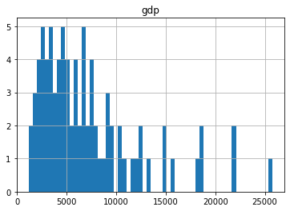
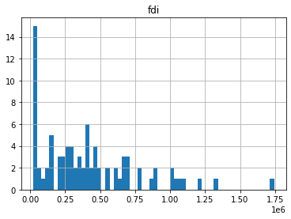
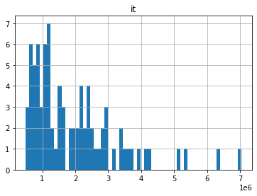
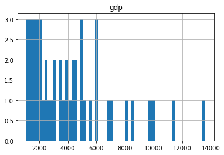
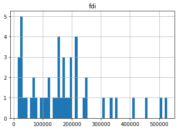
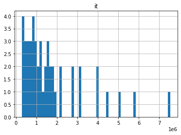
df.hist(column=['fdi'], bins=60)array([[<AxesSubplot:title={'center':'fdi'}>]], dtype=object)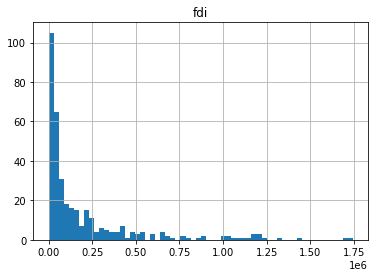
Distributions of Dependant Variables
Right skew
df.hist(column=['fdi'], bins=60)array([[<AxesSubplot:title={'center':'fdi'}>]], dtype=object)sns.histplot(df['fdi'])<AxesSubplot:xlabel='fdi', ylabel='Count'>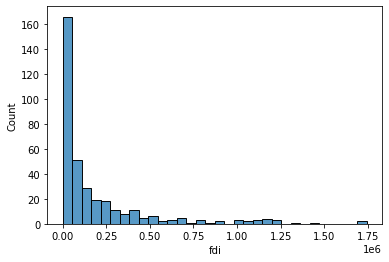
sns.displot(df['gdp'])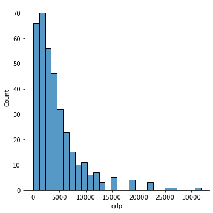
sns.displot(df['fdi'])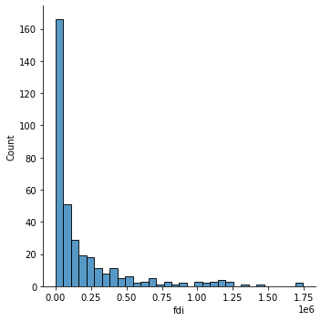
sns.displot(df['it'])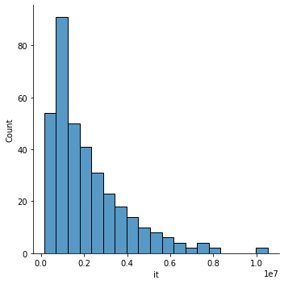
sns.displot(df['specific'].dropna())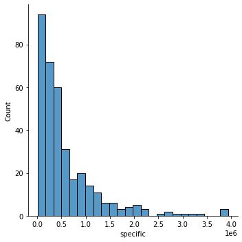
df.hist(column=['fdi'], bins=60)array([[<AxesSubplot:title={'center':'fdi'}>]], dtype=object)
Removal of GDP value outliers more than 3 standard deviations away from the mean
outlier removal of rows with GDP values that are > 3 standard deviations away form the mean
import scipy.stats as statsdf['gdp_zscore'] = stats.zscore(df['gdp'])these are the observations more then > 3 SDs away from the mean of gdp that will be dropped
df[abs(df['gdp_zscore'])>3].hist(column = ['gdp'])array([[<AxesSubplot:title={'center':'gdp'}>]], dtype=object)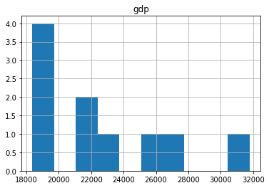
df_no_gdp_outliers=df[abs(df['gdp_zscore'])<3]df_no_gdp_outliers| year | region | province | gdp | fdi | it | specific | gdp_zscore | |
|---|---|---|---|---|---|---|---|---|
| 0 | 1996 | East China | Anhui | 2093.30 | 50661 | 631930 | 147002.0 | -0.521466 |
| 1 | 1997 | East China | Anhui | 2347.32 | 43443 | 657860 | 151981.0 | -0.464746 |
| 2 | 1998 | East China | Anhui | 2542.96 | 27673 | 889463 | 174930.0 | -0.421061 |
| 3 | 1999 | East China | Anhui | 2712.34 | 26131 | 1227364 | 285324.0 | -0.383239 |
| 4 | 2000 | East China | Anhui | 2902.09 | 31847 | 1499110 | 195580.0 | -0.340870 |
| ... | ... | ... | ... | ... | ... | ... | ... | ... |
| 354 | 2002 | East China | Zhejiang | 8003.67 | 307610 | 1962633 | 365437.0 | 0.798274 |
| 355 | 2003 | East China | Zhejiang | 9705.02 | 498055 | 2261631 | 391292.0 | 1.178172 |
| 356 | 2004 | East China | Zhejiang | 11648.70 | 668128 | 3162299 | 656175.0 | 1.612181 |
| 357 | 2005 | East China | Zhejiang | 13417.68 | 772000 | 2370200 | 656175.0 | 2.007180 |
| 358 | 2006 | East China | Zhejiang | 15718.47 | 888935 | 2553268 | 1017303.0 | 2.520929 |
350 rows × 8 columns
df_no_gdp_outliers.hist(column=['gdp'], bins=60)array([[<AxesSubplot:title={'center':'gdp'}>]], dtype=object)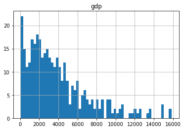
counts_fiscal=df.groupby('region').count()
counts_fiscal| year | province | gdp | fdi | it | specific | gdp_zscore | |
|---|---|---|---|---|---|---|---|
| region | |||||||
| East China | 84 | 84 | 84 | 84 | 84 | 84 | 84 |
| North China | 48 | 48 | 48 | 48 | 48 | 47 | 48 |
| Northeast China | 36 | 36 | 36 | 36 | 36 | 36 | 36 |
| Northwest China | 60 | 60 | 60 | 60 | 60 | 60 | 60 |
| South Central China | 72 | 72 | 72 | 72 | 72 | 72 | 72 |
| Southwest China | 60 | 60 | 60 | 60 | 60 | 57 | 60 |
counts_fiscal=df.groupby('province').count()
counts_fiscal| year | region | gdp | fdi | it | specific | gdp_zscore | |
|---|---|---|---|---|---|---|---|
| province | |||||||
| Anhui | 12 | 12 | 12 | 12 | 12 | 12 | 12 |
| Beijing | 12 | 12 | 12 | 12 | 12 | 12 | 12 |
| Chongqing | 12 | 12 | 12 | 12 | 12 | 9 | 12 |
| Fujian | 12 | 12 | 12 | 12 | 12 | 12 | 12 |
| Gansu | 12 | 12 | 12 | 12 | 12 | 12 | 12 |
| Guangdong | 12 | 12 | 12 | 12 | 12 | 12 | 12 |
| Guangxi | 12 | 12 | 12 | 12 | 12 | 12 | 12 |
| Guizhou | 12 | 12 | 12 | 12 | 12 | 12 | 12 |
| Hainan | 12 | 12 | 12 | 12 | 12 | 12 | 12 |
| Hebei | 12 | 12 | 12 | 12 | 12 | 11 | 12 |
| Heilongjiang | 12 | 12 | 12 | 12 | 12 | 12 | 12 |
| Henan | 12 | 12 | 12 | 12 | 12 | 12 | 12 |
| Hubei | 12 | 12 | 12 | 12 | 12 | 12 | 12 |
| Hunan | 12 | 12 | 12 | 12 | 12 | 12 | 12 |
| Jiangsu | 12 | 12 | 12 | 12 | 12 | 12 | 12 |
| Jiangxi | 12 | 12 | 12 | 12 | 12 | 12 | 12 |
| Jilin | 12 | 12 | 12 | 12 | 12 | 12 | 12 |
| Liaoning | 12 | 12 | 12 | 12 | 12 | 12 | 12 |
| Ningxia | 12 | 12 | 12 | 12 | 12 | 12 | 12 |
| Qinghai | 12 | 12 | 12 | 12 | 12 | 12 | 12 |
| Shaanxi | 12 | 12 | 12 | 12 | 12 | 12 | 12 |
| Shandong | 12 | 12 | 12 | 12 | 12 | 12 | 12 |
| Shanghai | 12 | 12 | 12 | 12 | 12 | 12 | 12 |
| Shanxi | 12 | 12 | 12 | 12 | 12 | 12 | 12 |
| Sichuan | 12 | 12 | 12 | 12 | 12 | 12 | 12 |
| Tianjin | 12 | 12 | 12 | 12 | 12 | 12 | 12 |
| Tibet | 12 | 12 | 12 | 12 | 12 | 12 | 12 |
| Xinjiang | 12 | 12 | 12 | 12 | 12 | 12 | 12 |
| Yunnan | 12 | 12 | 12 | 12 | 12 | 12 | 12 |
| Zhejiang | 12 | 12 | 12 | 12 | 12 | 12 | 12 |
#df_no_gdp_outliers.pivot_table(index='grouping column 1', columns='grouping column 2', values='aggregating column', aggfunc='sum')#pd.crosstab(df_no_gdp_outliers, 'year')df_no_gdp_outliers_subset = df_no_gdp_outliers[['region', 'gdp', 'fdi', 'it']]
df_no_gdp_outliers_subset| region | gdp | fdi | it | |
|---|---|---|---|---|
| 0 | East China | 2093.30 | 50661 | 631930 |
| 1 | East China | 2347.32 | 43443 | 657860 |
| 2 | East China | 2542.96 | 27673 | 889463 |
| 3 | East China | 2712.34 | 26131 | 1227364 |
| 4 | East China | 2902.09 | 31847 | 1499110 |
| ... | ... | ... | ... | ... |
| 354 | East China | 8003.67 | 307610 | 1962633 |
| 355 | East China | 9705.02 | 498055 | 2261631 |
| 356 | East China | 11648.70 | 668128 | 3162299 |
| 357 | East China | 13417.68 | 772000 | 2370200 |
| 358 | East China | 15718.47 | 888935 | 2553268 |
350 rows × 4 columns
def aggregate_and_ttest(dataset, groupby_feature='province', alpha=.05, test_cells = [0, 1]):
#Imports
from tqdm import tqdm
from scipy.stats import ttest_ind_from_stats
metrics = ['gdp', 'fdi', 'it']
feature_size = 'size'
feature_mean = 'mean'
feature_std = 'std'
for metric in tqdm(metrics):
#print(metric)
crosstab = dataset.groupby(groupby_feature, as_index=False)[metric].agg(['size', 'mean', 'std'])
print(crosstab)
treatment = crosstab.index[test_cells[0]]
control = crosstab.index[test_cells[1]]
counts_control = crosstab.loc[control, feature_size]
counts_treatment = crosstab.loc[treatment, feature_size]
mean_control = crosstab.loc[control, feature_mean]
mean_treatment = crosstab.loc[treatment, feature_mean]
standard_deviation_control = crosstab.loc[control, feature_std]
standard_deviation_treatment = crosstab.loc[treatment, feature_std]
t_statistic, p_value = ttest_ind_from_stats(mean1=mean_treatment, std1=standard_deviation_treatment, nobs1=counts_treatment,mean2=mean_control,std2=standard_deviation_control,nobs2=counts_control)
#fstring to print the p value and t statistic
print(f"The t statistic of the comparison of the treatment test cell of {treatment} compared to the control test cell of {control} for the metric of {metric} is {t_statistic} and the p value is {p_value}.")
#f string to say of the comparison is significant at a given alpha level
if p_value < alpha:
print(f'The comparison between {treatment} and {control} is statistically significant at the threshold of {alpha}')
else:
print(f'The comparison between {treatment} and {control} is not statistically significant at the threshold of {alpha}')aggregate_and_ttest(df_no_gdp_outliers, test_cells = [0,2])100%|██████████| 3/3 [00:00<00:00, 73.44it/s] size mean std
province
Anhui 12 3905.870000 1657.186350
Beijing 12 4673.453333 2585.218431
Chongqing 12 2477.712500 1073.374101
Fujian 12 4864.023333 2065.665290
Gansu 12 1397.832500 628.751284
Guangdong 8 10564.827500 3076.928885
Guangxi 12 2924.104167 1316.680079
Guizhou 12 1422.010833 679.163186
Hainan 12 686.714167 277.167010
Hebei 12 6936.825000 3266.776349
Heilongjiang 12 4041.241667 1531.676708
Henan 12 7208.966667 3669.236184
Hubei 12 4772.503333 2121.833184
Hunan 12 4765.891667 2159.588877
Jiangsu 10 8880.142000 3069.858941
Jiangxi 12 2460.782500 1125.673920
Jilin 12 2274.854167 975.812431
Liaoning 12 5231.135000 1988.700441
Ningxia 12 432.268333 224.934621
Qinghai 12 383.099167 194.618478
Shaanxi 12 2658.034167 1461.540671
Shandong 9 9093.784444 2952.172758
Shanghai 12 6432.454167 3049.477185
Shanxi 12 2817.210833 1531.856025
Sichuan 12 5377.790000 2412.985532
Tianjin 12 2528.665000 1367.201360
Tibet 12 170.426667 88.715089
Xinjiang 12 1828.896667 848.752092
Yunnan 12 2604.054167 1016.828525
Zhejiang 11 8264.008182 3870.124534
The t statistic of the comparison of the treatment test cell of Anhui compared to the control test cell of Chongqing for the metric of gdp is 2.505668475205307 and the p value is 0.020116468101911197.
The comparison between Anhui and Chongqing is statistically significant at the threshold of 0.05
size mean std
province
Anhui 12 7.095308e+04 78371.990245
Beijing 12 2.573693e+05 121078.451044
Chongqing 12 4.112783e+04 25850.251481
Fujian 12 3.744664e+05 65608.304198
Gansu 12 5.295500e+03 2941.514777
Guangdong 8 1.117272e+06 137741.790514
Guangxi 12 5.514783e+04 19725.422944
Guizhou 12 5.812333e+03 3337.775071
Hainan 12 6.436600e+04 19972.968837
Hebei 12 1.322308e+05 56541.699667
Heilongjiang 12 8.271933e+04 62818.132171
Henan 12 9.442600e+04 78299.340203
Hubei 12 1.497132e+05 70692.266346
Hunan 12 1.321102e+05 86224.990870
Jiangsu 10 7.422869e+05 257982.284030
Jiangxi 12 1.037352e+05 94052.957802
Jilin 12 4.122658e+04 16166.473875
Liaoning 12 2.859253e+05 152318.549543
Ningxia 12 3.950417e+03 3662.459319
Qinghai 12 1.098408e+04 12241.262884
Shaanxi 12 5.089258e+04 29331.097377
Shandong 9 3.943093e+05 219313.559118
Shanghai 12 5.082483e+05 166880.730080
Shanxi 12 3.862883e+04 32974.368539
Sichuan 12 6.219717e+04 39329.514938
Tianjin 12 2.501733e+05 119418.314501
Tibet 12 8.397500e+02 922.467750
Xinjiang 12 4.433083e+03 3630.847471
Yunnan 12 1.704833e+04 9213.888976
Zhejiang 11 3.704169e+05 286211.503281
The t statistic of the comparison of the treatment test cell of Anhui compared to the control test cell of Chongqing for the metric of fdi is 1.251953695962862 and the p value is 0.2237342006262051.
The comparison between Anhui and Chongqing is not statistically significant at the threshold of 0.05
size mean std
province
Anhui 12 2.649674e+06 1.966030e+06
Beijing 12 1.175965e+06 4.944598e+05
Chongqing 12 1.636146e+06 1.155977e+06
Fujian 12 1.274117e+06 6.641800e+05
Gansu 12 2.045347e+06 1.432134e+06
Guangdong 8 2.269997e+06 9.845008e+05
Guangxi 12 2.326539e+06 1.691126e+06
Guizhou 12 2.132636e+06 1.553924e+06
Hainan 12 5.404872e+05 4.064191e+05
Hebei 12 2.944163e+06 2.160958e+06
Heilongjiang 12 3.230451e+06 2.227509e+06
Henan 12 3.671971e+06 2.987163e+06
Hubei 12 2.904660e+06 2.189358e+06
Hunan 12 3.215128e+06 2.351869e+06
Jiangsu 10 1.563339e+06 8.478538e+05
Jiangxi 12 1.760613e+06 1.208039e+06
Jilin 12 2.136635e+06 1.375026e+06
Liaoning 12 2.628358e+06 1.563158e+06
Ningxia 12 7.872062e+05 5.531448e+05
Qinghai 12 9.600921e+05 6.721767e+05
Shaanxi 12 2.474031e+06 1.786697e+06
Shandong 9 1.965966e+06 8.946962e+05
Shanghai 12 1.569143e+06 6.996706e+05
Shanxi 12 1.983718e+06 1.491559e+06
Sichuan 12 4.016480e+06 2.923696e+06
Tianjin 12 8.310284e+05 4.641450e+05
Tibet 12 1.174176e+06 7.959846e+05
Xinjiang 12 2.251012e+06 1.612187e+06
Yunnan 12 3.165419e+06 1.652014e+06
Zhejiang 11 1.648032e+06 8.385722e+05
The t statistic of the comparison of the treatment test cell of Anhui compared to the control test cell of Chongqing for the metric of it is 1.5394289719091268 and the p value is 0.13796027793319976.
The comparison between Anhui and Chongqing is not statistically significant at the threshold of 0.05EastvNorth=pd.DataFrame()
EastvNorth= aggregate_and_ttest(df_no_gdp_outliers_subset, test_cells = [0,1])
EastvNorth100%|██████████| 3/3 [00:00<00:00, 138.11it/s] size mean std
region
East China 78 6070.604231 3500.372702
North China 48 4239.038542 2866.705149
Northeast China 36 3849.076944 1948.531835
Northwest China 60 1340.026167 1174.399739
South Central China 68 4835.540882 3697.129915
Southwest China 60 2410.398833 2144.589994
The t statistic of the comparison of the treatment test cell of East China compared to the control test cell of North China is 3.0488753833171947 and the p value is 0.0028085413359212334.
The comparison between East China and North China is statistically significant at the threshold of 0.05
size mean std
region
East China 78 355577.897436 275635.866746
North China 48 169600.583333 127011.475909
Northeast China 36 136623.750000 142734.495232
Northwest China 60 15111.133333 22954.193559
South Central China 68 218931.426471 339981.399823
Southwest China 60 25405.083333 31171.373876
The t statistic of the comparison of the treatment test cell of East China compared to the control test cell of North China is 4.391461461316698 and the p value is 2.3859390186769955e-05.
The comparison between East China and North China is statistically significant at the threshold of 0.05
size mean std
region
East China 78 1.775615e+06 1.153030e+06
North China 48 1.733719e+06 1.548794e+06
Northeast China 36 2.665148e+06 1.768442e+06
Northwest China 60 1.703538e+06 1.446408e+06
South Central China 68 2.500962e+06 2.196436e+06
Southwest China 60 2.424971e+06 2.002198e+06
The t statistic of the comparison of the treatment test cell of East China compared to the control test cell of North China is 0.17339716493934587 and the p value is 0.862621991978372.
The comparison between East China and North China is not statistically significant at the threshold of 0.05import numpy as np
import bootstrapped.bootstrap as bs
import bootstrapped.stats_functions as bs_stats
test_1=df_no_gdp_outliers[df_no_gdp_outliers['province']=='Beijing']
test=test_1['gdp'].to_numpy()
test
control_1=df_no_gdp_outliers[df_no_gdp_outliers['province']=='Shanxi']
control=control_1['gdp'].to_numpy()
controlarray([1292.11, 1476. , 1611.08, 1667.1 , 1845.72, 2029.53, 2324.8 ,
2855.23, 3571.37, 4230.53, 4878.61, 6024.45])bins = np.linspace(0, 40, 20)
plt.hist(control, label='Control')
plt.hist(test, label='Test', color='orange')
plt.title('Test/Ctrl Data')
plt.legend()<matplotlib.legend.Legend at 0x7faf8596a190>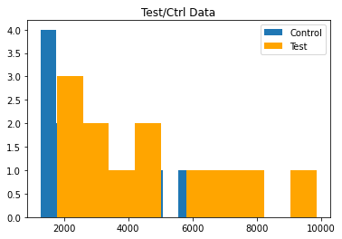
bs.bootstrap_ab(test, control, stat_func=bs_stats.sum, compare_func=bs_compare.percent_change)65.88937107712621 (-19.58634300490877, 124.01876332252021)# run an a/b test simulation considering the lengths of the series (sum)
# consider the full 'volume' of values that are passed in
print(bs_compare.percent_change(test.sum(), control.sum()))
print(bs.bootstrap_ab(
test,
control,
stat_func=bs_stats.sum,
compare_func=bs_compare.percent_change
))65.88937107712621
65.88937107712621 (-20.064956167313596, 124.54556877143521)# run an a/b test simulation ignoring the lengths of the series (average)
# just what is the 'typical' value
# use percent change to compare test and control
print(bs_compare.difference(test.mean(), control.mean()))1856.2424999999998print(bs.bootstrap_ab(test, control, bs_stats.mean, bs_compare.difference))1856.2424999999998 (218.25606250000146, 3411.9760624999994)